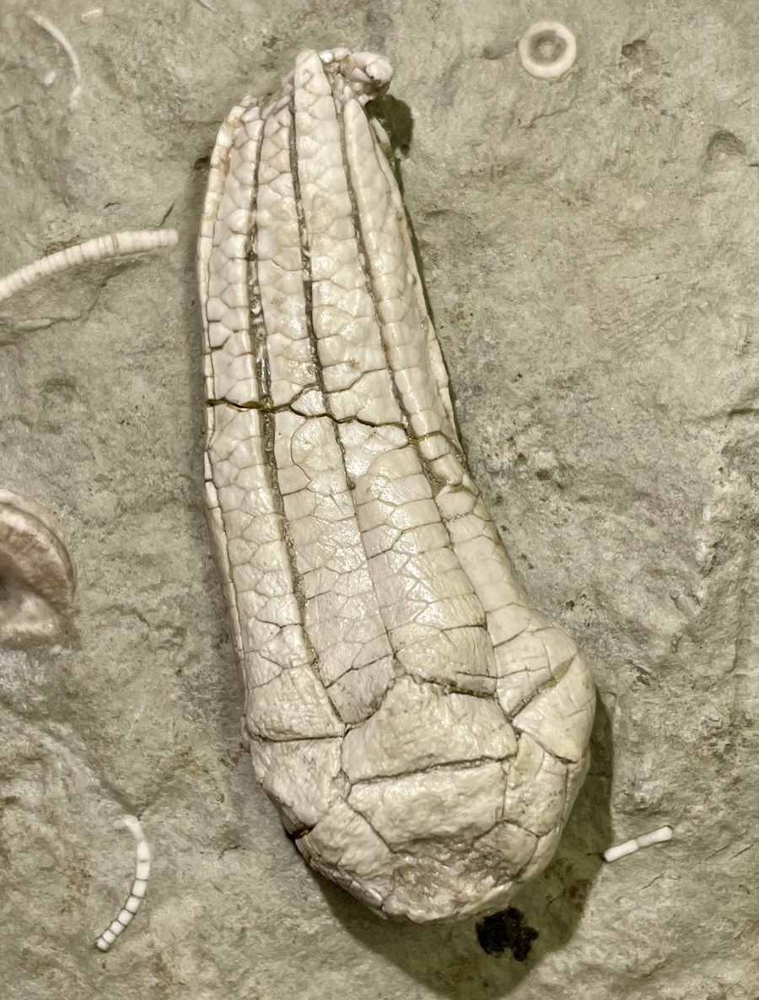

Erisocrinus?
• Pennsylvanian
• LaSalle Limestone, Bond Formation
• Pontiac, Illinois, USA
Size: 5.5 cm crown
This specimen was labeled Erisocrinus typus and is generally consistent with this identification, except for it having a prominent anal plate in the calyx that contacts the CD radials and basals. By definition, this genus and the family Erisocrinidae in general should have either no anal plate or a rudimentary one. This specimen appears to be an aberrant/mutant example.
|

|